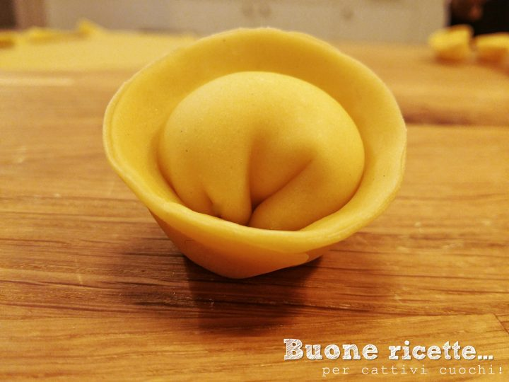
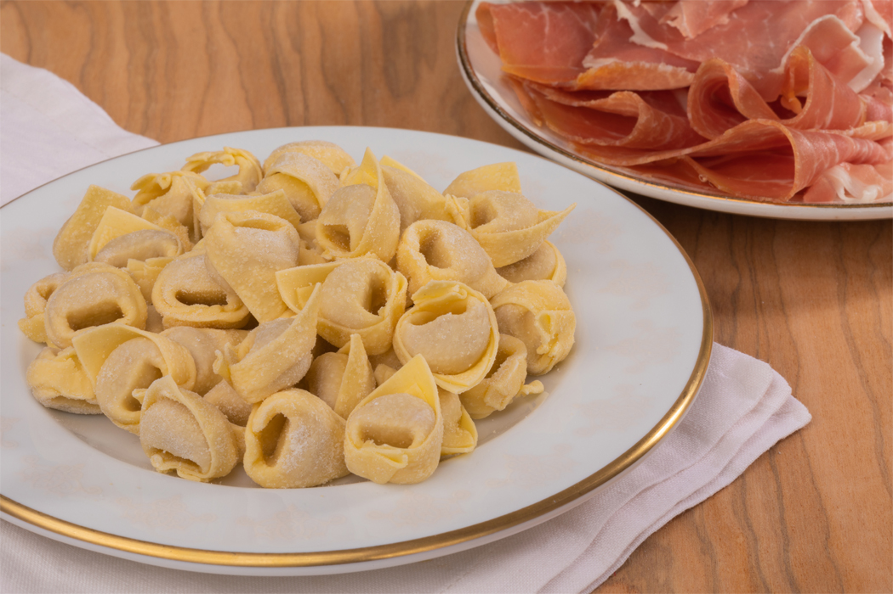

Home
Chi siamo
Contatti
BLOG DI CUCINA DI SIMONE
Piatti tipici dell'Emilia-Romagna:
In questa pagina vi mostriamo le principali ricette dell'Emilia-Romagna,
buona lettura
Cappellacci di zucca Ferraresi

Tortellini alla Bolognese

Pappardelle al cinghiale